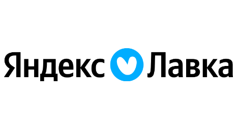
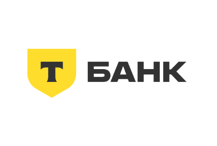
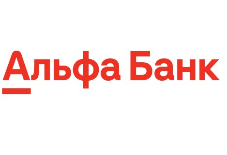
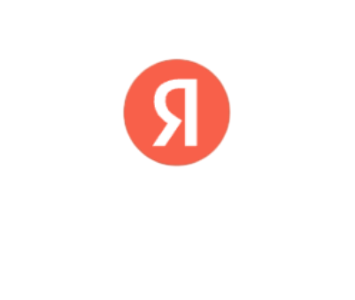

Простая работа
Вакансии
Сотрудник склада в распределительный центр OZON-fresh
Условия
- ЗП - От 80 000 руб. до вычета
- Стандартный график 3/3 (по 12 часов):
- с 9:00 - 21:00 дневные
- с 21:00 - 9:00 ночные (За ночные + 20% доплата к окладу)
- ДМС от 6 месяцев работы
- Оплачиваемое обучение с первого рабочего дня
Оператор склада в OZON

Кладовщик в Яндекс Лавка
Условия
- Доход до 101 149 до вычета налога
- Есть распродажа для сотрудников, скидка до 70% на продукты питания! ( все продукты с хорошим сроком годности)
- разгрузка и прием товаров, разгрузка товара вручную
- выкладка товара на складе
- сборка заказов с помощью терминала сбора данных, за смену собирается от 160 аказов разного веса
- График: 5/2 с плавающими выходными, смены чередуются: утро с 7:00 до 16.00, вечер: с 15:00 до 00:00.
Повар в Яндекс Лавка
Условия
- Доход до 101 149 до вычета налога
- Есть распродажа для сотрудников, скидка до 70% на продукты питания! ( все продукты с хорошим сроком годности)
- разгрузка и прием товаров, разгрузка товара вручную
- выкладка товара на складе
- сборка заказов с помощью терминала сбора данных, за смену собирается от 160 аказов разного веса
- График: 5/2 с плавающими выходными, смены чередуются: утро с 7:00 до 16.00, вечер: с 15:00 до 00:00.
Повар, Пекарь, Бариста ВкусВилл ВкусВилл
Условия
- Компенсация питания
- Оплачиваемая стажировка
- Компенсация расходов на медкнижку
- Отсутствие штрафов
- Удобный график
- Скидки на продукцию компании

СберМаркет // Вакансии
Курьер к партнеру сервиса Яндекс Еда
Условия
- Комфортное расписание
- Гарантии и бонусы
- Большое количество поступающих заказов (заказы поступают 24/7 круглосуточно)
- Доход до 3500 рублей в день

Работа в Т-Банк
Работа разных направлений:
- Домашний колл центр(ДКЦ). Работа из дома: взыскание задолженностей, привлечение новых клиентов и ведение уже существующих.
- Разъездная работа. Это представители компании по всей России: доставка карт, работа за стойками в крупных Торговых центрах.
- Работа в офисе. Это поддержка клиентов Банка из московского офиса Тинькофф.
Условия
- Доход без ограничений. Финансовая стабильность и возможность получать повышенное вознаграждение за дополнительные часы работы или активную продажу продуктов
- Удобный график работы. Работайте 5/2, 2/2 или по гибкому графику с почасовой оплатой — удаленно или в офисе. Если совмещаете с учебой, то подберем подходящую вакансию
- Можно без опыта. Главное — коммуникабельность, активность и желание работать, остальному научим. Начните свою карьеру в крупной и современной компании

Специалист по доставке пластиковых карт
Обязанности
Доставлять клиентам банковские продукты
Подписывать документы с клиентами
Консультировать клиентов по выгодным предложениям и продуктам банка, помогать им подключить дополнительные услуги
Условия
- Достойная зарплата от 60000 руб., на размер которой вы сами сможете влиять
- Гибкий график: 5/2, 2/2, 4/2,3/2
- Оформление по ТК РФ
- Карьерный рост

Пеший исследователь в Яндекс Карты
Работа разных направлений:Что предстоит делать кандидатам (исследователям):
- ходить по городу и собирать данные об организациях: кафе, магазинах, ателье и других;
- проверять, чтобы сведения в Яндекс Картах были актуальными;
- добавлять организации, которые еще не отмечены на Картах;
- общаться с их представителями, если возникают вопросы;
- сдельная оплата зависит от количества выполненных задач, чем больше вы их делаете, тем выше вознаграждение;
- работа в интервале с 10:00 до 18:00 по будням от 25 часов в неделю.
Требования
- телефон на базе Android 7.0 и выше;
- ноутбук или компьютер с доступом в интернет;
- грамотно разговаривает и пишет по-русски;
- не стесняется говорить с людьми;
- хорошо ориентируется в городе;
- готов много ходить пешком.